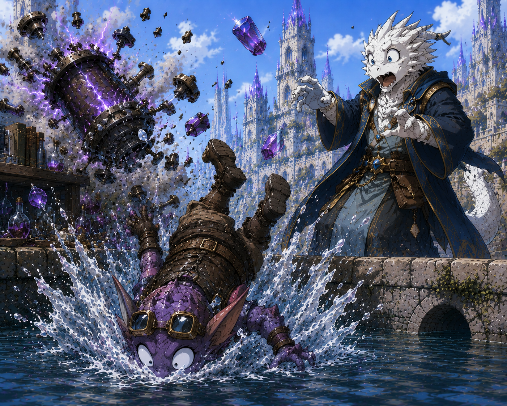

5001 – Die Begegnung am Fluss
Olga stürzt kopfüber in den Fluss. Kain rettet sie, und Valerion trifft im Kontext dieses Vorfalls erstmals auf Olga. Beginn der späteren Forschungspartnerschaft.

Olga stürzt kopfüber in den Fluss. Kain rettet sie, und Valerion trifft im Kontext dieses Vorfalls erstmals auf Olga. Beginn der späteren Forschungspartnerschaft.